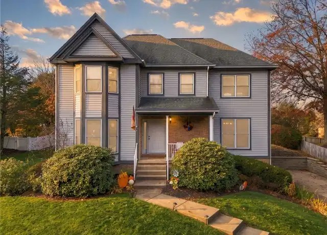
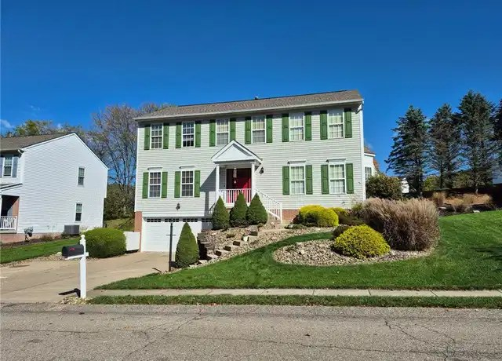
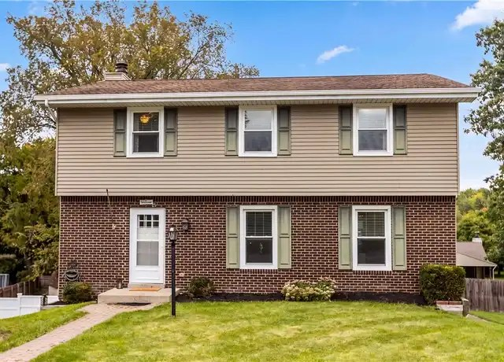

Monday, November 9, 2026
One new home at the top of the budget, plus two price drops on homes we sent earlier. Drive times are in minutes to Woodbine (Cranberry), then Foxwood (Mars), then Broadway (Wexford). They assume no traffic. Rush hour will probably add 10-25%.

01. 215 Meadowbrook Dr, Cranberry Twp (Glenbrook), Butler County - $549,900 [NEW]
New listing, listed Nov 7.
4 bed / 2.5 bath, 2,274 sq ft, built 1991, 0.31 ac flat, private back yard with mature landscaping, a wooded backdrop and a big rear concrete patio.
Full unfinished basement (interior entry) and an oversized attached 2+ car garage. Seneca Valley schools.
Right at the top of the budget and built just before 1995. The listing describes a renovated primary bath, granite and stainless kitchen, hardwood floors and a gas fireplace. Condition is from the listing text; I have not seen it in person.
Drive: 7 / 16 / 16. Very close to Woodbine, about 16 min to the other two.

02. 914 White Water Dr, Adams Twp (Adams Ridge), Mars, Butler County - $569,900 (was $579,900) [PRICE DROP]
Dropped $10k since the last update. Still a near-miss over budget.
4 bed / 2.5 bath, 2,580 sq ft, built 2000, 0.25 ac.
Drive: 19 / 10 / 15. Details as in the Oct 29 update.

03. 108 Emerald Ct, Cranberry Twp, Butler County - $419,900 (was $429,900) [PRICE DROP]
Dropped $10k since the last update.
4 bed / 2.5 bath, 1,792 sq ft, built 1978, 0.24 ac.
Drive: 10 / 17 / 12. Details as in the Oct 23 update.
No other price changes turned up among the active listings. I did not recheck the pending and contingent homes (707 Dunbury Ct, 211 Katherine Dr, 130 Woodbine Dr) this time.
Nothing else new met the criteria.
Prepared by your PA house search assistant
Photos are from the public Redfin listings.